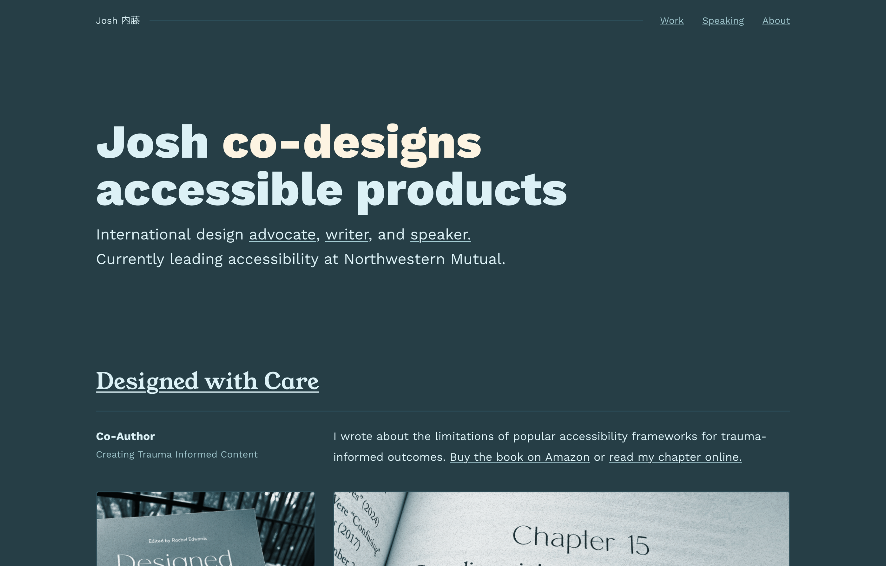
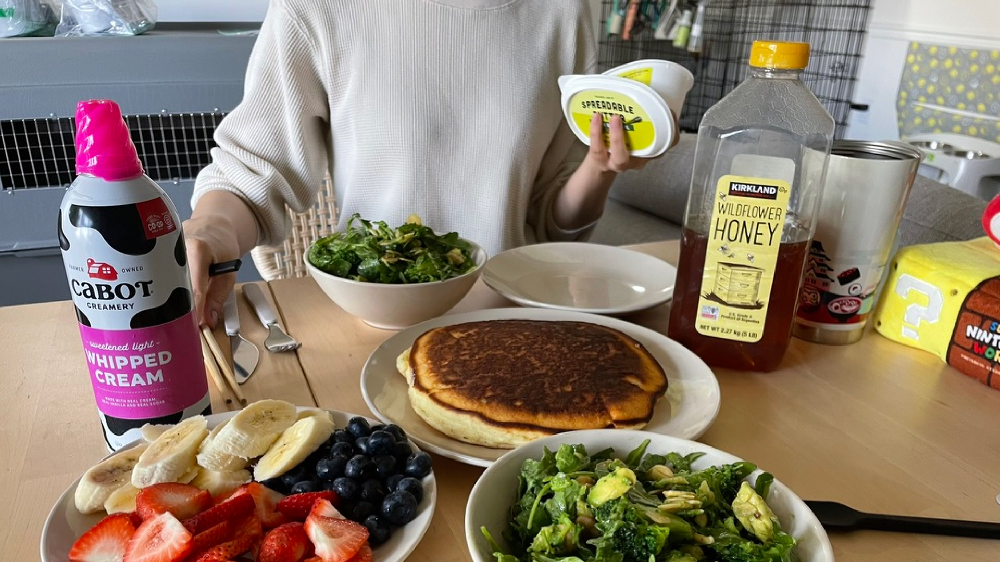
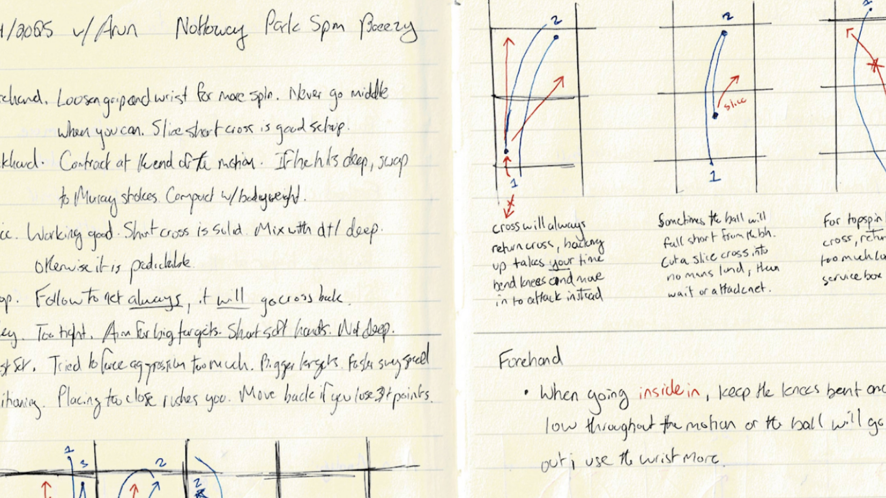
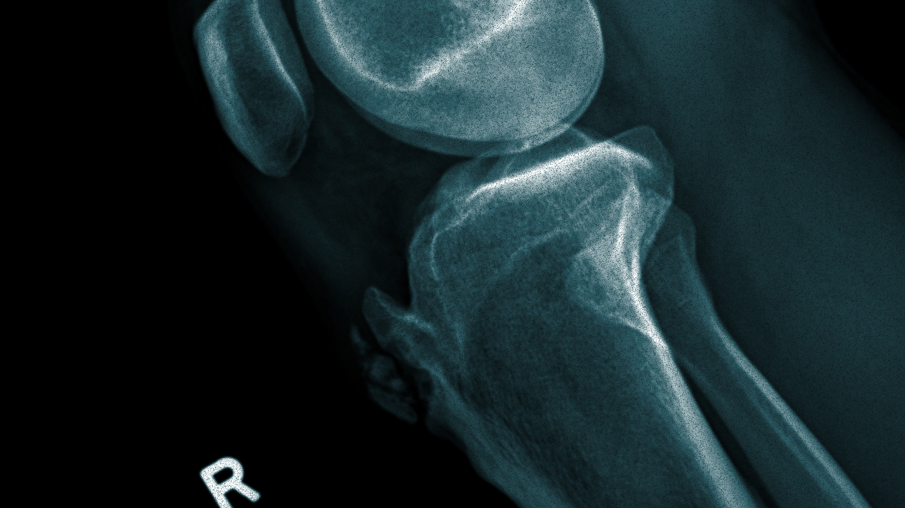
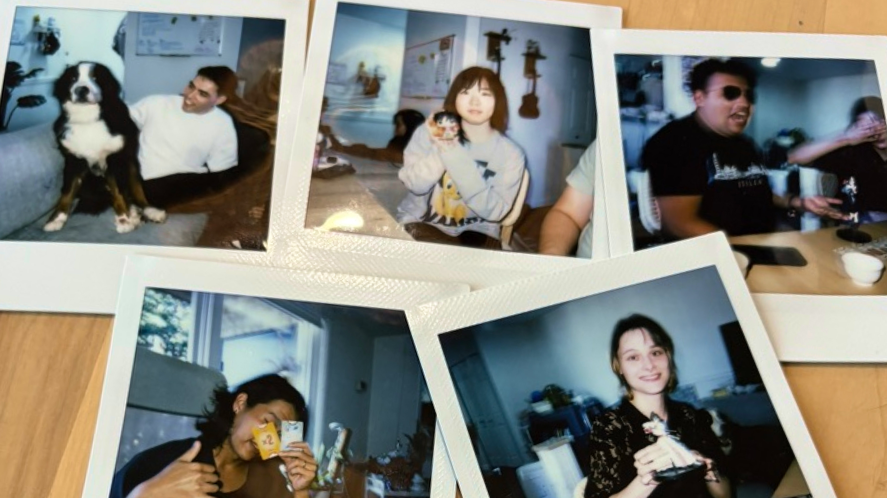
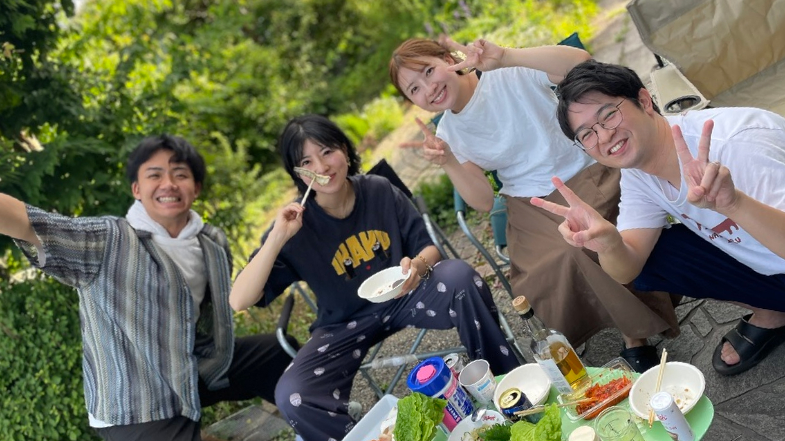
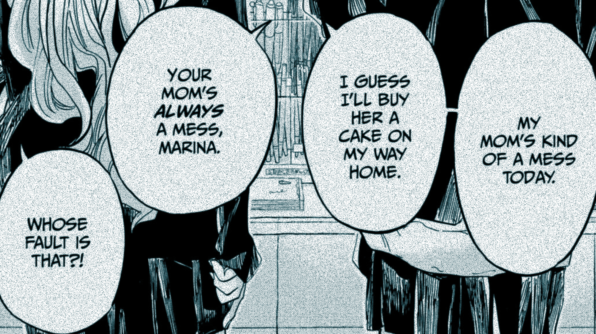
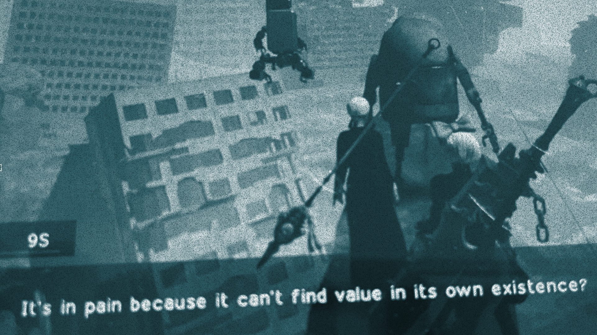

2025 in Review Glad
experiencing pleasure, joy, or delight
This year I:
- Added more color and texture to my portfolio
- Swapped to Young Serif and Work Sans
- Animated the lil things

Maybe I’m Glad I Didn’t Kill Myself.
I know how to be present, but I can’t feel it in the way I think I should. I can curl my toes, hum a song, take a walk– but I often find any sense of presence to be transitory. It’s frustrating. It’s youth. Or capitalism. Or trauma.
I want to learn how to better receive, give, and grow it together with people I love. That means expending what little energy I have in my little corner of the universe to resist the systems designed to isolate and exploit us even more.
I got to eat pancakes today. Maybe I’m glad I didn’t kill myself. Maybe I’m glad.

Maybe I’m Glad I Rested.
Our exhaustion will not lead us to liberation. Nothing can come from exhaustion but more exhaustion and more toxicity and terror. The time to rest is now.
Despite my 2024 reflection, I quickly reset to my nurtured (eugenicist) values of efficiency, optimization, and productivity. At the start of 2025 (per annual tradition), my heart asked (or rather, demanded from) myself:
What must I do to feel worthy of life this year?
From work to play, I dived towards the outcomes I believed I needed to justify my existence. I can't publicly reflect on most of my professional or personal struggles, but I can touch on the absurd state of my leisure.
Like tennis.
Starting the year, I wanted to find more ways to win.
I pushed harder in theory.

And in practice.
And things, well,
broke.

By the end of February, I was on crutches.
Reflecting on what happened, it feels like a microcosm of a larger pattern I experience within a bodymind at civil war with itself.
- System 1 / Automatic
- My heart demands more work to justify my right to exist.
- My body pleads for rest.
- System 2 / Manual
- My mind attempts (and fails) at calculating just the right balance between the two.
Typically, at this point, I feel I’m in a deficit. I need to produce (or suffer) more to make up for what I lack or failed to accomplish.
I feel I have no choice, despite having choices. I feel I always need to move forward, even if it’s not in a direction I want.
And yet, this time, I felt like I had a choice.
To be less productive.
To rest.
Maybe I’m Glad I Belong.
The remedy to alienation, a state that often keeps people cooperative and docile in the face of injustice, is belonging.
Unlike previous years, I didn’t choose to alienate myself during the lows. Life was (and continues to be) a mess, but I’ve reconnected with a community of folk who care, regardless of what I’ve accomplished.
I can ask for help as much as I can help others.

My partner has also encouraged me to talk about my needs as they are. The more time I spend with her family, the more I’m relearning what love should look and feel like. They often tell me, “
I genuinely feel it.

Finding joy with everyone has helped me reclaim joy on my own. To be a little more selfish.
More than ever, I chose to enjoy games over study, naps over the gym, snacks over diet, purchases over savings. I continued therapy, I invested in skincare, I signed up for a tennis membership, I bought a switch 2, I’m eating more fruit… and somehow I don’t feel as much of a failure for it all.
Injuring my knee also brought me closer to the people I play with. Slowing down helped me rediscover a joy for sport centered around the people I share a court with instead of just the competition against them.
I’m incredibly privileged to belong to several loving communities. They afford me the safety and space to rest in a world that is deeply hurt. It makes all the difference.
I regret how long it took for me to embrace them over artificial (or perhaps hereditary) guilt, ambition, and stress.
Life would have been so much easier to bear.

Maybe I'm Glad.
Often, the things we hate inside ourselves are the things we punish other people for. Self-loathing is often rooted in a fear of disability–a fear of cognitive deficiency, and the idea that they are not good enough.
I just finished reading Disabling Intelligences. It’s clear from all the quotes. The one perched atop this section stuck with me the most.
In many ways I became a host for ableism without knowing it. It taught me how to loathe myself (and others). And, like a virus, it multiplies and destroys life.
I struggle with it.
I think I always will.

Despite that, I’m learning how to fight back.
Embrace people as they are.
Embrace myself as I am.
It’s embarrassingly simple.
I’ve gotten better at it this year.
It’s given me rest.
At times, joy.
And when I’ve really needed it, hope.
Here’s to more of that in 2026.
I’m glad I didn’t kill myself.
I’m glad.
Year in Review
This time, I won't talk about goals. Instead, here's some of the things that brought me joy.
Shows
- Orb: On the Movements of the Earth. Peak.
- Gachiakuta. A joy to watch as a designer.
- Ranma ½. My guilty pleasure.
Games
- Nier Automata. I erased Pascal’s memories.
- Octopath Traveler 2. It gave Golden Sun.
- Fire Emblem Engage. (3rd Playthrough). Diamant carried.
Reads
- Tender Is The Flesh. “She has the human look of a domesticated animal." Thanks Silvia for dragging me back into the world of novels.
- Takopi’s Original Sin. Reminded me of my childhood, and all the pain that still can't be fixed.
- Gundam is just the same as Jane Austen but happens to include giant mech suits. I would pay money to learn about this in school.
Collab
- Wrote a chapter for Digital Accessibility Ethics. Releases March 2026! Big thanks to Lainey for inviting me into this project. It's a dream being published with people I look up to and have learned so much from.
- Edited "On inclusive personas and inclusive user research" by Eric Bailey. I always learn something new from Eric and giving feedback deepened my own knowledge of radical participatory design.
- Edited "A framework for AI adoption in government" by Mickin Sahni. I read too much about AI this year, and Mickin gave me the perfect outlet.